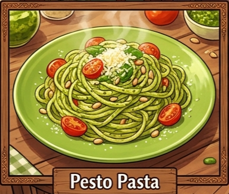

Description
Fresh basil, parmesan, and pine nuts blended into perfection.

🛒 Ingredients
👨🍳 Instructions
If needed, add a little reserved pasta water to create a silky sauce.
Season with salt and black pepper to taste.
Serve immediately with additional Parmesan cheese, if desired.
⏱️ Recipe Information
Preparation Time: 10 minutes
Cooking Time: 15 minutes
Total Time: 25 minutes
Servings: 2
Difficulty: Easy
To make the pesto more vibrant and flavorful, use fresh basil leaves that are bright green and aromatic. Toasting the pine nuts before adding them to the pesto can also enhance their nutty flavor.
🍽️ Best Served With
Garlic bread
Grilled vegetables (zucchini, bell peppers, or asparagus)
Caesar salad or a fresh garden salad
Garlic mushrooms
Grilled chicken or grilled shrimp (optional)
Fresh lemonade, sparkling water, or iced tea